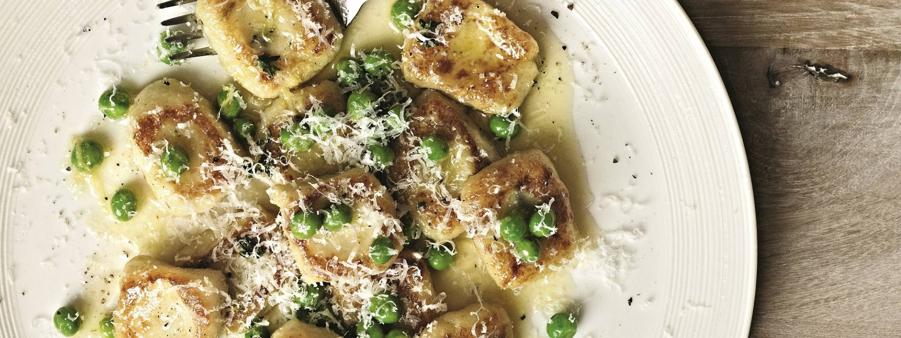

Thyme and Ricotta Gnocchi

Description
Gnocchi infused with thyme and ricotta fried in butter and finished with garden peas and parmesan.
Ingredients
- Thyme
- Ricotta
- Potatoes
- Plain flour
- Butter
- Parmesan
- Peas
Steps
- 3/4 fill pot of water to bring to boil.
- Par-boil potatoes - slightly less cooked than mashed potatoes.
- Drain potatoes and allow to cool.
- Once cool, break up with a fork and mix with flour, thyme and ricotta.
- Fold into a dough taking care not to knead - only lightly mix otherwise too much gluten will form.
- Separate dough into 4 portions and roll into thin sausages - approx. 3cm diameter.
- Flour your knife and cut into small bite sized pieces.
- Flour your finger and lightly press on each piece to create a pillow like shape. The indent will hold more sauce also.
- Boil the gnocchi until floating on the surface. Transfer straight into hot pan and lightly fry on each side.
- Once golden brown, add butter, peas and parmesan and fry for a further 1-2 minutes until golden, melted and fragrant.